<!DOCTYPE html>
<html lang="zh-CN">

<head>
  <meta charset="UTF-8">
  <meta name="viewport" content="width=device-width, initial-scale=1.0">
  <title>证件拍照</title>
  <script src="https://cdn.tailwindcss.com"></script>
  <link href="https://cdn.jsdelivr.net/npm/font-awesome@4.7.0/css/font-awesome.min.css" rel="stylesheet">
  <!-- 引入Vue 2 -->
  <script src="https://cdn.jsdelivr.net/npm/vue@2.7.14/dist/vue.min.js"></script>

  <script>
    tailwind.config = {
      theme: {
        extend: {
          colors: {
            primary: '#42b983',
            dark: '#1E293B',
          },
          fontFamily: {
            inter: ['Inter', 'system-ui', 'sans-serif'],
          },
        }
      }
    }
  </script>
  <style type="text/tailwindcss">
    @layer utilities {
            .content-auto {
                content-visibility: auto;
            }
            .form-input-focus {
                @apply focus:ring-2 focus:ring-primary/50 focus:border-primary transition duration-200;
            }
            .btn-hover {
                @apply hover:shadow-lg hover:-translate-y-0.5 transition-all duration-200;
            }
        }
    </style>
  <style scoped>
    .document-camera-container {
      position: relative;
      width: 100%;
      height: 100vh;
      overflow: hidden;
      background-color: #000;
    }

    .camera-view {
      position: relative;
      width: 100%;
      height: 100%;
    }

    video {
      width: 100%;
      height: 100%;
      object-fit: cover;
    }

    .mask-overlay {
      position: absolute;
      top: 0;
      left: 0;
      width: 100%;
      height: 100%;
      background-color: rgba(0, 0, 0, 0.6);
      display: flex;
      flex-direction: column;
      justify-content: center;
      align-items: center;
    }

    .document-frame {
      position: relative;
      border: 2px solid rgba(255, 255, 255, 0.8);
      box-shadow: 0 0 20px rgba(255, 255, 255, 0.5);
      animation: pulse 2s infinite;
    }

    /* 边框角落的装饰 */
    .document-frame::before,
    .document-frame::after {
      content: '';
      position: absolute;
      width: 30px;
      height: 10px;
      background-color: #42b983;
    }

    .document-frame::before {
      top: -5px;
      left: -5px;
    }

    .document-frame::after {
      bottom: -5px;
      right: -5px;
    }

    .id-card-front,
    .id-card-back {
      width: 80%;
      height: 0;
      padding-bottom: 50%;
      /* 身份证比例约为 85.6mm × 54mm */
    }

    .driving-license {
      width: 75%;
      height: 0;
      padding-bottom: 45%;
      /* 驾驶证比例约为 88mm × 54mm */
    }

    .instruction-text {
      position: absolute;
      bottom: 30%;
      color: white;
      font-size: 16px;
      text-align: center;
      padding: 10px;
      background-color: rgba(0, 0, 0, 0.7);
      border-radius: 5px;
      max-width: 80%;
    }

    .capture-button {
      position: absolute;
      bottom: 15%;
      left: 50%;
      transform: translateX(-50%);
      width: 60px;
      height: 60px;
      border-radius: 50%;
      background-color: rgba(255, 255, 255, 0.2);
      border: 2px solid white;
      cursor: pointer;
      display: flex;
      justify-content: center;
      align-items: center;
      transition: all 0.2s;
    }

    .capture-button:active {
      transform: translateX(-50%) scale(0.95);
    }

    .capture-icon {
      width: 48px;
      height: 48px;
      border-radius: 50%;
      background-color: white;
    }

    .preview-container {
      position: absolute;
      top: 0;
      left: 0;
      width: 100%;
      height: 100%;
      background-color: #000;
      display: flex;
      flex-direction: column;
      align-items: center;
      justify-content: center;
    }

    .preview-image {
      width: 80%;
      max-height: 70%;
      margin-bottom: 20px;
      border: 2px solid white;
      border-radius: 5px;
      overflow: hidden;
    }

    .preview-image img {
      width: 100%;
      height: 100%;
      object-fit: contain;
    }

    .preview-actions {
      display: flex;
      width: 80%;
      justify-content: space-between;
    }

    .retake-button,
    .confirm-button {
      padding: 10px 20px;
      border: none;
      border-radius: 5px;
      font-size: 16px;
      cursor: pointer;
      transition: all 0.2s;
    }

    .retake-button {
      background-color: #666;
      color: white;
    }

    .confirm-button {
      background-color: #42b983;
      color: white;
    }

    .document-type-selector {
      position: absolute;
      bottom: 5%;
      left: 0;
      width: 100%;
      display: flex;
      justify-content: center;
      gap: 20px;
    }

    .type-item {
      display: flex;
      flex-direction: column;
      align-items: center;
      color: white;
      cursor: pointer;
      opacity: 0.7;
      transition: all 0.2s;
    }

    .type-item.active,
    .type-item:hover {
      opacity: 1;
      transform: scale(1.05);
    }

    .type-item i {
      font-size: 24px;
      margin-bottom: 5px;
    }

    .type-item span {
      font-size: 14px;
    }

    @keyframes pulse {
      0% {
        box-shadow: 0 0 0 0 rgba(255, 255, 255, 0.4);
      }

      70% {
        box-shadow: 0 0 0 10px rgba(255, 255, 255, 0);
      }

      100% {
        box-shadow: 0 0 0 0 rgba(255, 255, 255, 0);
      }
    }

    /* 适配不同屏幕尺寸 */
    @media (max-width: 320px) {
      .instruction-text {
        font-size: 14px;
      }

      .capture-button {
        width: 50px;
        height: 50px;
      }

      .capture-icon {
        width: 38px;
        height: 38px;
      }
    }
  </style>
</head>

<body class="bg-gray-50 font-inter min-h-screen flex items-center justify-center p-4">
  <div id="app">
    <document-camera @photo-captured="handlePhotoCaptured"></document-camera>
  </div>

  <script>
    // 定义DocumentCamera组件
    const DocumentCamera = {
      template: `
    <div class="document-camera-container">
    <!-- 相机视图区域 -->
    <div class="camera-view" ref="cameraView">
      <video ref="video" autoplay playsinline></video>

      <!-- 取景框遮罩 -->
      <div class="mask-overlay">
        <div class="mask-overlay-container">
          <div class="instruction-text">请正对手机屏幕</div>
          <div class="document-frame" :class="documentType"></div>
        </div>

      </div>
      <!-- 拍照提示 -->
      <div class="capture-tips">
        <div class="capture-tips-item"><span>1</span> 请确保面部清晰，露出五官，表情自然</div>
        <div class="capture-tips-item"><span>2</span> 请不要戴帽子、口罩等物品，避免遮挡五官</div>
        <div class="capture-tips-item"><span>3</span> 可佩戴眼镜，但镜片需无反光，避免遮挡瞳孔</div>
        <div class="capture-tips-item"><span>4</span> 请在光线均匀、无明显逆光的环境下进行采集</div>
        <div class="capture-tips-item"><span>5</span> 取景框和背景中请勿出现多张人脸</div>
        <!-- 拍照按钮 -->
        <div class="capture-button-box">
          <button class="capture-button" @click="capturePhoto">
            <div class="capture-icon"></div>
          </button>
          <div class="capture-turn" @click="trunCapture">
            
          </div>
        </div>
      </div>

    </div>

    <!-- 拍照结果预览 -->
    <div v-if="capturedImage" class="preview-container">
      <div class="preview-image">
        
      </div>
      <div class="preview-actions">
        <button class="retake-button" @click="resetCamera">重拍</button>
        <button class="confirm-button" @click="confirmPhoto">确认</button>
      </div>
    </div>

  </div>  `,
      data() {
        return {
          video: null,
          canvas: null,
          documentType: 'id-card-front', // 默认证件类型：身份证正面
          capturedImage: null,
          stream: null,
          facingMode: 'environment'
        };
      },
      mounted() {
        this.initCamera();
      },
      beforeDestroy() {
        this.stopCamera();
      },
      methods: {
        // 初始化相机
        async initCamera() {
          try {
            // 获取视频元素和创建画布
            this.video = this.$refs.video;
            this.canvas = document.createElement('canvas');

            // 请求访问摄像头
            const stream = await navigator.mediaDevices.getUserMedia({
              video: {
                facingMode: this.facingMode, // 使用后置摄像头
                width: { ideal: 1280 },
                height: { ideal: 720 }
              }
            });

            // 保存媒体流以便后续释放
            this.stream = stream;

            // 将流连接到视频元素
            this.video.srcObject = stream;

            // 监听视频加载完成事件，设置画布尺寸
            this.video.addEventListener('loadedmetadata', () => {
              this.canvas.width = this.video.videoWidth;
              this.canvas.height = this.video.videoHeight;
            });
          } catch (error) {
            // 处理权限错误
            if (error.name === 'NotAllowedError' || error.name === 'PermissionDeniedError') {
              this.statusText = '请授予相机访问权限';
            } else if (error.name === 'NotFoundError' || error.name === 'DevicesNotFoundError') {
              this.statusText = '未检测到相机设备';
            } else if (error.name === 'NotReadableError') {
              // 通常是由于硬件限制或其他应用占用了摄像头
              this.statusText = '无法访问相机，请确保没有其他应用正在使用它';
            } else if (error.name === 'SecurityError') {
              // 安全错误，通常是由于在非安全上下文中使用
              this.statusText = '由于安全限制，无法访问相机';
            } else {
              this.statusText = '相机初始化失败，请重试';
            }

            console.error('摄像头访问失败:', error);

          }
        },

        // 停止相机
        stopCamera() {
          if (this.stream) {
            this.stream.getTracks().forEach(track => {
              track.stop();
            });
            this.stream = null;
          }
        },

        // 拍照
        capturePhoto() {
          if (!this.video) return;

          const ctx = this.canvas.getContext('2d');
          ctx.drawImage(this.video, 0, 0, this.canvas.width, this.canvas.height);

          // 获取取景框在视频中的位置和尺寸
          const frameRect = this.$refs.cameraView.querySelector('.document-frame').getBoundingClientRect();
          const videoRect = this.$refs.video.getBoundingClientRect();

          // 计算缩放比例
          const scaleX = this.canvas.width / videoRect.width;
          const scaleY = this.canvas.height / videoRect.height;

          // 计算取景框在画布上的位置和尺寸
          const frameX = (frameRect.left - videoRect.left) * scaleX;
          const frameY = (frameRect.top - videoRect.top) * scaleY;
          const frameWidth = frameRect.width * scaleX;
          const frameHeight = frameRect.height * scaleY;

          // 创建一个新的画布来裁剪图像
          const cropCanvas = document.createElement('canvas');
          cropCanvas.width = frameWidth;
          cropCanvas.height = frameHeight;

          const cropCtx = cropCanvas.getContext('2d');
          cropCtx.drawImage(
            this.canvas,
            frameX, frameY, frameWidth, frameHeight,
            0, 0, frameWidth, frameHeight
          );

          // 将裁剪后的图像转换为DataURL
          this.capturedImage = cropCanvas.toDataURL('image/jpeg', 0.9);

          // 停止相机以节省资源
          this.stopCamera();
        },

        //翻转相机
        trunCapture() {
          console.log('object');
          this.facingMode = this.facingMode === 'environment' ? 'user' : 'environment';
        },

        // 重置相机
        resetCamera() {
          this.capturedImage = null;
          this.initCamera();
        },

        // 确认照片
        confirmPhoto() {
          // 这里可以添加上传照片的逻辑
          console.log('照片已确认:', this.capturedImage);

          // 发送事件通知父组件
          this.$emit('photo-captured', this.capturedImage);
        }
      }
    };

    // 创建Vue实例
    new Vue({
      el: '#app',
      components: {
        DocumentCamera
      },
      methods: {
        handlePhotoCaptured(imageData) {
          console.log('父组件接收到照片:', imageData);
          // 这里可以添加处理照片的逻辑
          alert('照片已成功拍摄！');
        }
      }
    });
  </script>
</body>

</html>